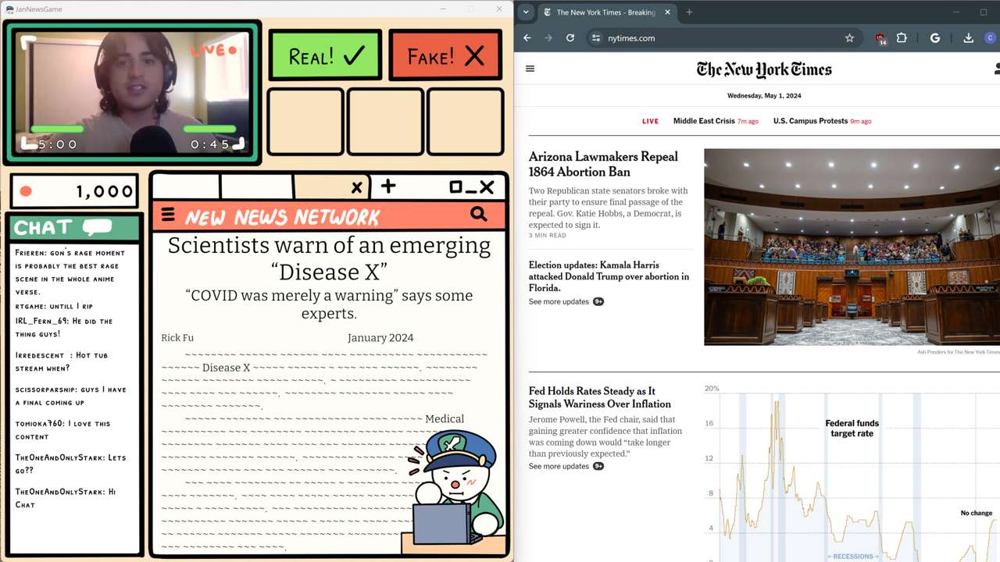

JaNews
April 2024 - 48 Hours

JaNews is a game about telling apart real and fake news headlines. It was made in 48 hours by me and a team of 6 other UCI students.
I programmed all of the game logic, as well as the interactive video feed and chat, and most of the UI elements.
I also implemented tools to parse CSV files into game content. The news articles are represented in CSV files and loaded into special data structures to display at runtime. The chat pulls from another CSV file with a list of messages paired with sentiments, and another file of possible usernames to generate messages based on how the player is performing in game.